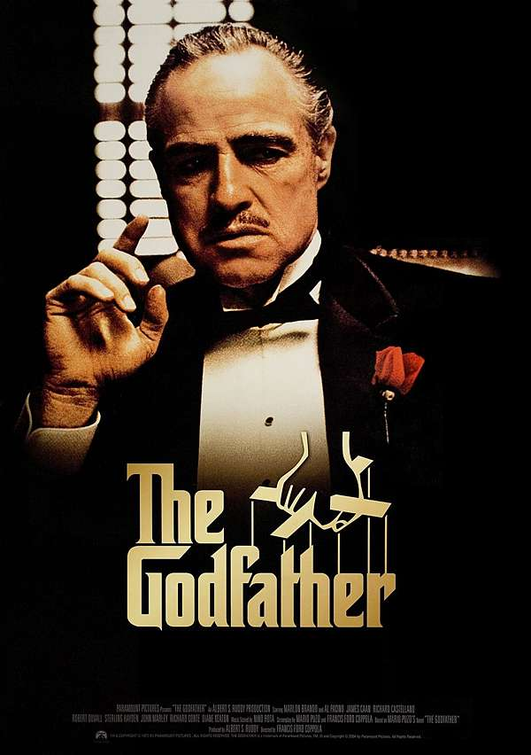
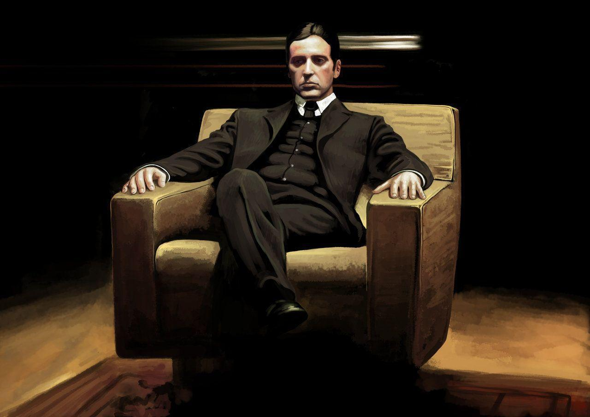
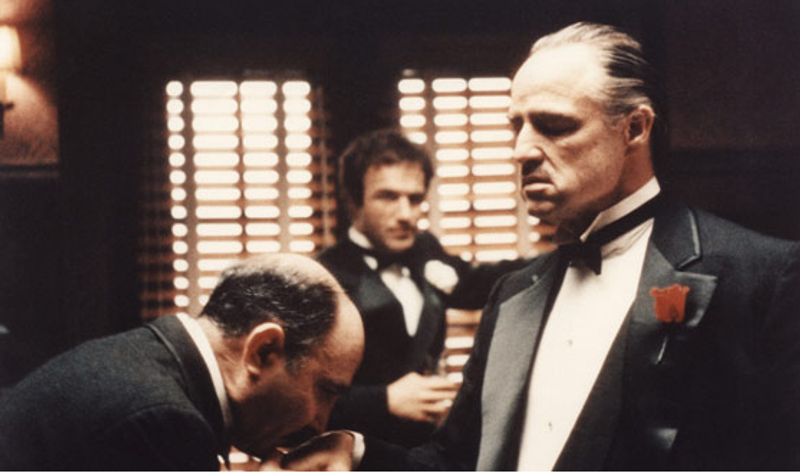
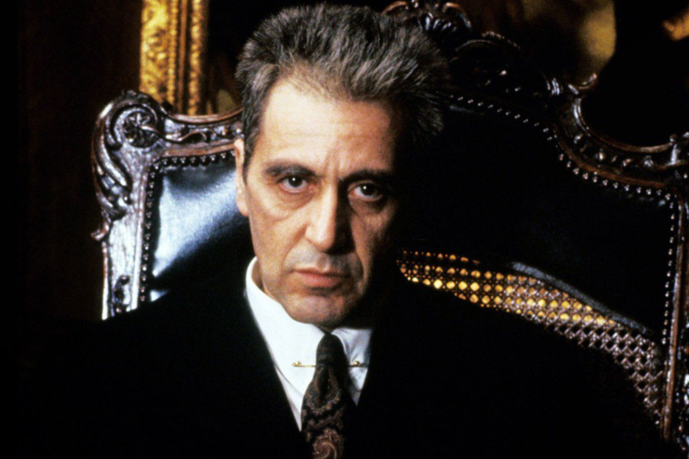

title>Godfather
情节介绍
- 《教父》（英语：The Godfather）是一部1972年的美国电影，根据马里奥·普佐（Mario Puzo）的同名畅销小说改编，弗朗西斯·科波拉执导，由马龙·白兰度和艾尔·帕西诺主演的帮派电影。
- 《教父》是《教父三部曲》的第一集，掀起帮派电影的新潮流，荣获第45届奥斯卡金像奖最佳电影、最佳男主角及最佳改编剧本三大奖项，被视为是经典电影之一。《教父》长年占据在互联网电影数据库（IMDb）的史上最佳250部电影名单前列。多年获影迷票选为第二名，而其续集《教父2》则荣获第三名。
演员表
- 马龙·白兰度饰演维托·柯里昂，柯里昂家族的当家，西西里裔美国人，娶了卡梅拉·柯里昂，育有桑尼、弗雷多、迈克尔和康妮，还有一名义子汤姆。
- 艾尔·帕西诺饰演迈克尔·柯里昂，维托的第四个小孩，第三个儿子，第二次世界大战中由于日军偷袭珍珠港，愤而从军，成为美国海军陆战队军官，家族中唯一从大学毕业的成员，最初远离江湖，在一连串的事件后，决意协助父亲，继承家业，从家族的幼子，唯一的书生，继任为无情的黑手党教父，是电影的主要角色。
- 詹姆斯·肯恩饰演圣提诺·“桑尼”·柯里昂，维托的长子，生性急躁鲁莽，作为二当家，他是柯里昂家族的储君。
- 罗伯特·杜瓦尔饰演汤姆·黑根，维托的义子，属于家族的外围，是家族的律师和军师，与柯里昂家族不同，汤姆是德裔和爱尔兰裔的混血。
- 黛安·基顿饰演凯伊·亚当斯-柯里昂，迈克尔的女友，是华斯普裔（WASP），后成为迈克尔第二任妻子，生有两个孩子。
导演介绍
- 弗朗西斯·科波拉最初并非派拉蒙的第一选择，其他至少有两位导演是派拉蒙的首选。意大利导演赛尔乔·莱翁内也有受到派拉蒙的邀请，但是他对于这部歌颂黑手党的影片没有兴趣。（他之后执导他唯一的黑帮电影《美国往事》，是描述美国犹太人帮派的故事。）而根据当时派拉蒙总裁罗勃·艾文（Robert Evans）的说法，科波拉在最初也并非想接下执导工作，同样也深怕著赞扬黑手党与暴力的效应。另一方面，艾文也独钟意大利裔的美国导演接掌工作，主要是因过去非意大利裔的美国导演所作的黑手党电影票房都很惨淡，也因此，艾文希望观众能够看电影像“吃意大利面”。当科波拉想到可将影片隐喻美式资本主义时，他决定争取执导工作。在当时，科波拉曾执导过8部影片，其中最著名的为改编自舞台音乐剧的《彩虹柚子》，而科波拉也曾因与人合编《巴顿将军》获得奥斯卡奖。科波拉在当时也欠债40万美元，主因是他监制的乔治·卢卡斯影片《五百年后》超出华纳兄弟提供的预算所致。最后科波拉在卢卡斯的建议下，接掌《教父》执导工作。
- 科波拉与派拉蒙影业之间也有严重冲突，而科波拉甚至差点被换掉。派拉蒙认为制作开始时不顺利，但是科波拉却认为首周制作相当顺利。派拉蒙认为科波拉都无法按照进度，频频发生制作上与选角的失误，徒增不必要的开销。科波拉在DVD的语音记事说过，他当时笼罩在替换导演的阴影下，尽管当时也极大的压力，他还是坚持他的决定，并且设法避免被替换。
- 派拉蒙在当时制作也面临财务危机，只能将《教父》作为孤注一掷，期望能重振派拉蒙影业，因此科波拉也面临了相当大的压力。他们希望《教父》为广大观众接受，并且要求科波拉增加多一点刺激场面。而科波拉也只好增加一些暴力场面，来满足派拉蒙的期待。
评价
- 《教父》一片一直广获全球影评的赞赏以及大众公认的影史经典，被认为可能是史上最棒的电影。美国影评网站烂番茄根据84篇评论得出99%的新鲜度。《娱乐周刊》的投票中，《教父》同样被认为是影史最棒的影片。《教父》目前还是AFI百年百大系列最新版本的亚军，仅次于《公民凯恩》后，最初的版本则为季军，位于《卡萨布兰卡》后。而在2008年6月，AFI又票选了美国影史10种类型电影的前10名，《教父》一片经由1500名以上的成员票选后，成为帮派电影的冠军。
- 2002年，英国杂志《Sight & Sound》举办的国际影评投票中，《教父》获选为影史优秀影片第四名。《教父》与《教父2》同样被美国国家影片登记部典藏，不过教父三部曲的最终曲《教父3》并未被收录。
- 配乐方面，尼诺·罗塔所创的主题曲─（Speak Softly Love）同样也广为人赞赏，并且在后世常为人所使用。
- 《教父》同样在票房上也取得成功，打破当时其他影片的票房纪录。开幕首周，《教父》有$5,264,402的票房收入，并且在下映后一共赚进$81,500,000的收入，是其预算及行销活动费用的14倍之多。后来在重新上映后，票房收入提高到1亿3400万美元。
- 名导演斯坦利·库布里克认为《教父》可能是影史最棒的影片，而其阵容也无庸置疑的出色。
发行
《教父》于1972年3月15日于美国上映，海外地区上映时间如下：
| 国家／地区 | 上映日期 |
|---|
| 日本 | 1972年7月15日 |
| 西德 | 1972年8月24日 |
| 意大利 | 1972年9月14日 |
| 阿根廷 | 1972年9月20日 |
| 瑞典 | 1972年9月27日 |
| 芬兰 | 1972年9月29日 |
| 挪威 | 1972年10月16日（奥斯陆） |
| 法国 | 1972年10月18日 |
| 澳大利亚 | 1972年11月2日 |
| 荷兰 | 1973年1月18日 |
| 英属香港 | 1973年10月11日 |
| 台湾 | 1975年 |
封面和剧照




原声带
《教父》的配乐由尼诺·罗塔负责主要配乐，卡明·科波拉则辅助配乐的工作。《教父》的配乐一直广为人赞赏与喜爱，主题曲（The Godfather Waltz）与配乐（Love Theme From The Godfather）都是家喻户晓的经典名曲，后世一直广为使用与流传。